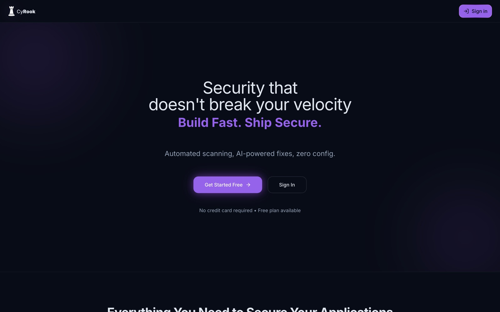
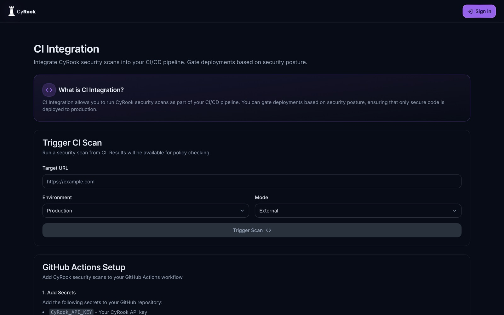
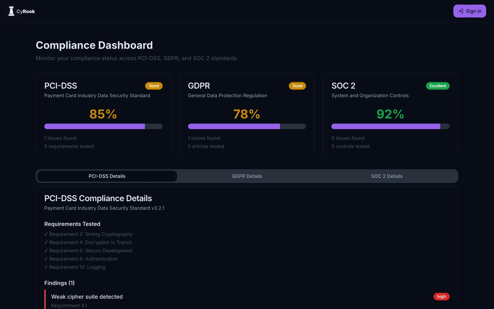

01
Read the case study
CyRook
Security scanning platform · B2B SaaS
Continuous web and API security scanning for teams without an enterprise budget. The hard part wasn't the scanner - it was making security findings something a developer actually acts on. Every screen opens with a plain-language explainer, and Auto‑Fix closes the loop by opening a pull request with a stack-aware patch.
- Next.js 14
- NestJS
- Python FastAPI
- PostgreSQL
- Redis
30+OWASP scan modules
3services, one monorepo
4pricing tiers


